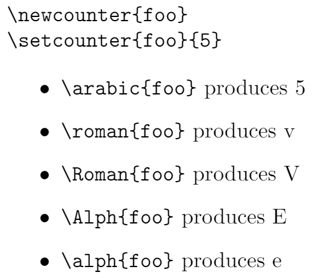
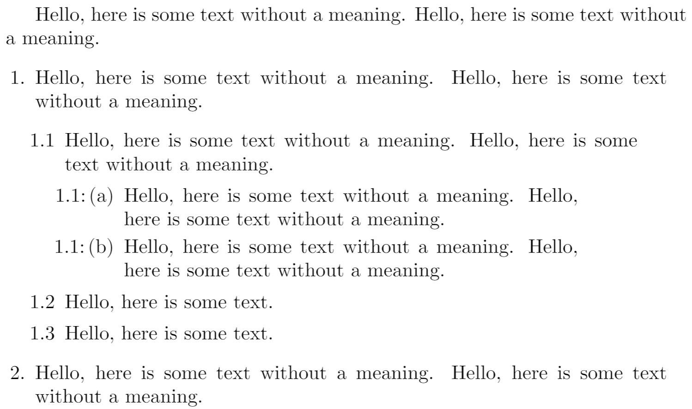

Lists
Three ways to insert lists in Overleaf
Overleaf provides 3 ways to create lists using LaTeX:
- Use Insert Bulleted List () or Insert Numbered List () on the editor toolbar to insert lists into Visual Editor or Code Editor.
- Paste a formatted list into Visual Editor.
- Write your own LaTeX code using Code Editor.
Options 1 and 2 are designed to automatically generate the LaTeX code necessary for typesetting lists. However, for those who want to write their own LaTeX code, option 3 might be the preferred choice. It offers the greatest flexibility and is the primary focus of this article.
Introduction
This article provides an introduction to typesetting, and customizing, various types of list in LaTeX:
- the
itemizeenvironment for creating a bulleted (unordered) list - the
enumerateenvironment for creating a numbered (ordered) list - the
descriptionenvironment for creating a list of descriptions
Typesetting lists is a large topic because LaTeX lists are extremely configurable, enabling creation of an enormous variety of list types and structures. We’ll survey and demonstrate some methods you can use to configure and customize your lists.
Examples of basic lists
The itemize environment for bulleted (unordered) lists
Unordered (bulleted) lists are produced by the itemize environment, where each list entry starts by using the \item command, which also generates the bullet symbol.
Lists are easy to create:
\begin{itemize}
\item List entries start with the \verb|\item| command.
\item Individual entries are indicated with a black dot, a so-called bullet.
\item The text in the entries may be of any length.
\end{itemize}
Open this example in Overleaf.
This example produces the following output:
The enumerate environment for numbered (ordered) lists
Numbered (ordered) lists have the same syntax but use the enumerate environment: each entry must be preceded by the control sequence \item, which will automatically generate numbers to label the item. These numbers start at 1 with every use of the enumerate environment—note that this, default, LaTeX numbering behaviour can be changed/controlled via the enumitem package.
Numbered (ordered) lists are easy to create:
\begin{enumerate}
\item Items are numbered automatically.
\item The numbers start at 1 with each use of the \texttt{enumerate} environment.
\item Another entry in the list
\end{enumerate}
Open this example in Overleaf.
This example produces the following output:
The description environment
The following example demonstrates the description environment. The (optional) label for each entry is enclosed in square brackets after the \item command:
\item[label text] Text of your description goes here...
We also use the blindtext package to generate some dummy English text in the third entry. To obtain English we need to use the babel package with the language option [english]:
\usepackage[english]{babel}
Here is the example:
\documentclass{article}
\usepackage[english]{babel} % To obtain English text with the blindtext package
\usepackage{blindtext}
\begin{document}
\begin{description}
\item This is an entry \textit{without} a label.
\item[Something short] A short one-line description.
\item[Something long] A much longer description. \blindtext[1]
\end{description}
\end{document}
Open this example in Overleaf.
This example produces the following output:
Changing the label of individual entries
As shown in the description environment example, the \item command takes an optional parameter, in square brackets. You can use this feature within itemize and enumerate environments to change the default label of individual entries in your list:
\item[label text] Text of your entry goes here...
The label text will be used to produce the label for this entry.
Change the labels using \verb|\item[label text]| in an \texttt{itemize} environment
\begin{itemize}
\item This is my first point
\item Another point I want to make
\item[!] A point to exclaim something!
\item[$\blacksquare$] Make the point fair and square.
\item[NOTE] This entry has no bullet
\item[] A blank label?
\end{itemize}
\vspace{10pt}
Change the labels using \verb|\item[label text]| in an \texttt{enumerate} environment
\begin{enumerate}
\item This is my first point
\item Another point I want to make
\item[!] A point to exclaim something!
\item[$\blacksquare$] Make the point fair and square.
\item[NOTE] This entry has no bullet
\item[] A blank label?
\end{enumerate}
Open this example in Overleaf.
This example produces the following output:
Nested lists
In LaTeX you can insert a list inside another list. The above list types may be included within one another, either mixed or of one type, to a depth of 4 levels.
\begin{enumerate}
\item The labels consists of sequential numbers
\begin{itemize}
\item The individual entries are indicated with a black dot, a so-called bullet
\item The text in the entries may be of any length
\begin{description}
\item[Note:] I would like to describe something here
\item[Caveat!] And give a warning here
\end{description}
\end{itemize}
\item The numbers starts at 1 with each use of the \texttt{enumerate} environment
\end{enumerate}
Open this example in Overleaf.
This example produces the following output:

Nested lists: label style
The label style of nested list entries changes according to its depth in the list. For nested itemize lists the bullet type changes; for enumerate lists the number format changes with increasing depth of entry. Both are limited to a depth of 4 levels.
Nested enumerate lists: number format
\begin{enumerate}
\item First level item
\item First level item
\begin{enumerate}
\item Second level item
\item Second level item
\begin{enumerate}
\item Third level item
\item Third level item
\begin{enumerate}
\item Fourth level item
\item Fourth level item
\end{enumerate}
\end{enumerate}
\end{enumerate}
\end{enumerate}
Open this example in Overleaf.
This example produces the following output:
Nested itemize lists: bullet style
The bullet style changes depending on the depth of the nested lists:
\begin{itemize}
\item First level item
\item First level item
\begin{itemize}
\item Second level item
\item Second level item
\begin{itemize}
\item Third level item
\item Third level item
\begin{itemize}
\item Fourth level item
\item Fourth level item
\end{itemize}
\end{itemize}
\end{itemize}
\end{itemize}
Open this example in Overleaf.
This example produces the following output:
Customizing lists
LaTeX’s lists are highly configurable, providing plenty of scope for the creation of many different types of customized list. You can either make direct modifications to LaTeX’s standard list types or, preferably, use the highly versatile enumitem package to do it for you.
CTAN hosts a number of list-related packages which may be worth investigating if you have particular customization requirements. In addition, tex.stackexchange provides a wealth of list-related questions with answers that provide useful insights and great examples!
We’ll start with some examples which modify list labels then move on to customization of list layouts.
Customizing lists: changing labels
Firstly, we show how to change list labelling without using the enumitem package.
Standard label-generation commands
Custom lists can be produced by using the enumitem package or direct modification of the standard lists. Here, we’ll give a summary of some standard LaTeX commands, counter variables and list parameters that you may need to be aware of.
The following table shows the LaTeX commands used for label-generation at each level of the itemize and enumerate list environments:
| Level | enumerate label commands |
itemize label commands |
| Level 1 | \labelenumi |
\labelitemi |
| Level 2 | \labelenumii |
\labelitemii |
| Level 3 | \labelenumiii |
\labelitemiii |
| Level 4 | \labelenumiv |
\labelitemiv |
Counter variables for enumerate
The enumerate list environment also uses four counter variables which keep track of the current label value for each level:
| Level | enumerate counter variable |
| Level 1 | enumi |
| Level 2 | enumii |
| Level 3 | enumiii |
| Level 4 | enumiv |
Examples: customizing labels of enumerate lists
You can configure LaTeX’s standard labelling by using \renewcommand to redefine the label-generating commands and, for the enumerate environment, you can also use the appropriate counter variable.
Here are some examples which do this without using the enumitem package.
Practical example
\documentclass{article}
\begin{document}
\renewcommand{\labelenumii}{\arabic{enumi}.\arabic{enumii}}
\renewcommand{\labelenumiii}{\arabic{enumi}.\arabic{enumii}.\arabic{enumiii}}
\renewcommand{\labelenumiv}{\arabic{enumi}.\arabic{enumii}.\arabic{enumiii}.\arabic{enumiv}}
\begin{enumerate}
\item One
\item Two
\item Three
\begin{enumerate}
\item Three point one
\begin{enumerate}
\item Three point one, point one
\begin{enumerate}
\item Three point one, point one, point one
\item Three point one, point one, point two
\end{enumerate}
\end{enumerate}
\end{enumerate}
\item Four
\item Five
\end{enumerate}
\end{document}
Open this example in Overleaf.
This example produces the following output:
Printing counter variables
In the previous example, the command \arabic was used to typeset the current value of various label counter variables. Note that “Arabic numerals”, and use of the command \arabic, refers to the digits 0 to 9: see this Arabic numerals article on Wikipedia for further background.
In general, a counter variable can be printed in various formats by using one of the following 5 commands:
\arabic{counter variable}\roman{counter variable}\Roman{counter variable}\Alph{counter variable}\alph{counter variable}
For example:
\documentclass{article}
\begin{document}
\begin{verbatim}
\newcounter{foo}
\setcounter{foo}{5}
\end{verbatim}
\newcounter{foo}
\setcounter{foo}{5}
\begin{itemize}
\item \verb|\arabic{foo}| produces \arabic{foo}
\item \verb|\roman{foo}| produces \roman{foo}
\item \verb|\Roman{foo}| produces \Roman{foo}
\item \verb|\Alph{foo}| produces \Alph{foo}
\item \verb|\alph{foo}| produces \alph{foo}
\end{itemize}
\end{document}
Open this example in Overleaf.
This example produces the following output:

Non-practical (fun) example
This example typesets emoji using an OpenType colour font so it will only work in LuaLaTeX. See the Overleaf article An overview of technologies supporting the use of colour emoji fonts in LaTeX for more information on typesetting emoji.
Although this a just a fun example, using LuaLaTeX, it demonstrates customizing all four label-generation commands, and using the label-counter variables, to create some unusual labelling... Click the “Open in Overleaf” link to see the full code.
\renewcommand{\labelenumi}{\duck{enumi}}
\renewcommand{\labelenumii}{\duck{enumi}.\duckegg{enumii}}
\renewcommand{\labelenumiii}{\duck{enumi}.\duckegg{enumii}.\duckegg{enumiii}}
\renewcommand{\labelenumiv}{\duck{enumi}.\duckegg{enumii}.\duckegg{enumiii}.\duckchick{enumiv}}
\begin{enumerate}
\item A duck
\item More ducks
\item A flurry of ducks
\begin{enumerate}
\item Ducks and eggs
\begin{enumerate}
\item Do I see...
\item Ducks and pre-ducks
\begin{enumerate}
\item Awww...
\item So cute!
\end{enumerate}
\end{enumerate}
\end{enumerate}
\item Back to ducks
\item Again
\end{enumerate}
To see the full code, open this LuaLaTeX example in Overleaf.
This example produces the following output
Customizing lists: changing the layout
In addition to customizing labels, it is possible to modify list spacing and layout, but first we need to know the various LaTeX parameters which determine typesetting and layout of lists.
LaTeX list parameters
You can use the layouts package to generate a diagram which displays the LaTeX list parameters:
\documentclass{article}
\usepackage{layouts}
\begin{document}
\begin{figure}
\listdiagram
\caption{The \LaTeX{} parameters which define typesetting and layout of lists.}
\end{figure}
\end{document}
Open this example in Overleaf.
This example produces the following output:

The meaning of these parameters is described in the list section of the LaTeX2e unofficial reference manual so we won’t reproduce it here.
Creating a custom list using the list environment
LaTeX provides the generic list environment which provides a framework for creating your own list type(s). Using the information contained in the diagram above, the following example is a slightly modified version of one contained in the list section of the LaTeX2e unofficial reference manual
\documentclass{article}
\begin{document}
\newcounter{boxlblcounter}
\newcommand{\makeboxlabel}[1]{\fbox{#1.}\hfill}% \hfill fills the label box
\newenvironment{boxlabel}
{\begin{list}
{\arabic{boxlblcounter}}
{\usecounter{boxlblcounter}
\setlength{\labelwidth}{3em}
\setlength{\labelsep}{0em}
\setlength{\itemsep}{2pt}
\setlength{\leftmargin}{1.5cm}
\setlength{\rightmargin}{2cm}
\setlength{\itemindent}{0em}
\let\makelabel=\makeboxlabel
}
}
{\end{list}}
\newcommand{\randomtext}{Hello, here is some text without a meaning. Hello, here is some text without a meaning. Hello, here is some text without a meaning.}
\noindent\randomtext
\begin{boxlabel}
\item \randomtext
\item \randomtext
\item \randomtext
\end{boxlabel}
\end{document}
Open this example in Overleaf.
This example produces the following output:
Using the enumitem package to modify and create lists
The enumitem package is the recommended method for modifying standard LaTeX lists or creating your own custom list formats. enumitem provides a wealth of features so we can’t cover all of them but we can provide a few basic examples to help get you get started. Anyone wishing to explore this versatile package in more depth is strongly encouraged to browse tex.stackexchange for questions, answers (and examples) relating to the enumitem package, and to read the package documentation.
enumitem package option shortlabels
The enumitem provides an optional configuration parameter called shortlabels which you use via
\usepackage[shortlabels]{enumitem}
The shortlabels option mimics the behaviour of the enumerate package, providing a concise method for defining the numbering scheme of enumerate environments. See the enumerate package documentation for further information.
Modifying a standard list
With reference to the LaTeX parameters diagram we can use enumitem to easily customize a standard LaTeX list, such as itemize:
\documentclass{article}
\usepackage{enumitem}
\begin{document}
\newcommand{\randomtext}{Hello, here is some text without a meaning. Hello, here is some text without a meaning.}
\section*{Using LaTeX's default settings for \texttt{itemize}}
\randomtext
\begin{itemize}
\item \randomtext
\begin{itemize}
\item \randomtext
\begin{itemize}
\item \randomtext
\end{itemize}
\item \randomtext
\end{itemize}
\item \randomtext
\end{itemize}
\section*{Using a custom \texttt{itemize} via \texttt{enumitem}}
\subsection*{Note the effect of left and right margin settings}
\randomtext
\begin{itemize}[leftmargin=30pt, rightmargin=2cm]
\item \randomtext
\begin{itemize}
\item \randomtext
\begin{itemize}
\item \randomtext
\end{itemize}
\item \randomtext
\end{itemize}
\item \randomtext
\end{itemize}
\end{document}
Open this enumitem example in Overleaf.
This example produces the following output:
Creating a new list with enumitem
To create a new list type with enumitem you use the \newlist command which requires 3 arguments:
\newlist{name}{list-type}{max-depth}
name: the name of your list, to be used as an environment:\begin{name} ... \end{name}list-typethis has to be one of the standard LaTeX list types:enumerateitemizedescriptionmax-depth: the maximum depth to which this list will be nested. NOTE for lists which exceed LaTeX’s default nesting limit of 4, you must also issue the command\setlistdepth{integer}whereintegeris the maximum nesting depth you intend to use. See the Lists for lawyers example for a demonstration of that.
After you have created the new list you can configure it with the \setlist command.
Using \setlist to configure a custom list created with enumitem
In this example we’ll create a new list called myitems which is based on enumerate. We’ll set max-depth to 3:
\newlist{myitems}{enumerate}{3}
A minimum requirement is using the \setlist command to define labels for this custom list. One way to do that, for enumerate-based lists, is to use the counter variables created by the enumitem package—those counter variables use the name of your list: myitems in our example.
Here is how we use the corresponding counter variables within our label configuration:
myitemsifor the level 1 entriesmyitemsiifor the level 2 entriesmyitemsiiifor the level 3 entries
If we had more than 3 levels, the corresponding counter variables would be called myitemsiv (level 4), myitemsv (level 5) and so forth, continuing the use of lower-case Roman numerals.
In addition to the labels, we’ll also set some values for leftmargin and rightmargin (see the LaTeX parameters diagram).
\documentclass{article}
\usepackage{enumitem}
\begin{document}
\newcommand{\randomtext}{Hello, here is some text without a meaning. Hello, here is some text without a meaning.}
\newcommand{\shortrandomtext}{Hello, here is some text.}
% Create a custom list based on enumerate
% It is called "myitems"
% We'll create a list that is 3 levels deep
\newlist{myitems}{enumerate}{3}
% Configure the behaviour of level 1 entries
% NOTE: we use the list counter "myitemsi"
\setlist[myitems, 1]
{label=\arabic{myitemsi}., %1., 2., 3., ...
leftmargin=\parindent,
rightmargin=10pt
}
% Configure the behaviour of level 2 entries
% NOTE: we use the list counter "myitemsii"
\setlist[myitems, 2]
{label=\arabic{myitemsi}.\arabic{myitemsii}, %1.1, 1.2, 1.3...
leftmargin=15pt,
rightmargin=15pt}
% Configure the behaviour of level 3 entries
% NOTE: we use the list counter "myitemsiii"
\setlist[myitems, 3]
% Use a label of 1.1:<kern>(a), 1.1:<kern>(b) etc
{label=\arabic{myitemsi}.\arabic{myitemsii}:\kern1.5pt(\alph{myitemsiii}),
leftmargin=30pt,
rightmargin=30pt}
\randomtext
\begin{myitems}
\item \randomtext
\begin{myitems}
\item \randomtext
\begin{myitems}
\item \randomtext
\item \randomtext
\end{myitems}
\item \shortrandomtext
\item \shortrandomtext
\end{myitems}
\item \randomtext
\end{myitems}
\end{document}
Open this enumitem example in Overleaf.
This example produces the following output:

Lists for lawyers: nesting lists to an arbitrary depth
The enumitem package lets you create lists which can be nested to an arbitrary depth, removing LaTeX’s limit of 4. Anyone preparing contracts with complex (deeply nested) clause structures might benefit from this, although the nested code does look a little intimidating...
\documentclass{article}
\usepackage{enumitem}
\begin{document}
\newlist{contract}{enumerate}{10}
\setlist[contract]{label*=\arabic*.}
\setlistdepth{10}
\section*{Custom list nested to 10 levels deep!}
\begin{contract}
\item Level 1
\begin{contract}
\item Level 2
\begin{contract}
\item Level 3
\begin{contract}
\item Level 4
\begin{contract}
\item Level 5
\begin{contract}
\item Level 6
\begin{contract}
\item Level 7
\begin{contract}
\item Level 8
\begin{contract}
\item Level 9
\begin{contract}
\item Level 10
\end{contract}
\end{contract}
\end{contract}
\end{contract}
\end{contract}
\end{contract}
\end{contract}
\end{contract}
\end{contract}
\end{contract}
\end{document}
Open this enumitem example in Overleaf.
This example produces the following output:
Custom bullets using the enumitem package and MetaPost
The following examples only work with LuaLaTeX and are designed to give a suggestion of some possibilities—of course, substitute MetaPost with your preferred drawing application/tool!
These examples use the luamplib package and also demonstrate expandable commands, such as \the and \directlua, can be used within the MetaPost code.
Example 1: auto-sizing bullet points
This example produces bullet points that reduce in size as the list depth increases. Click on the “Open in Overleaf” link to run the example and view the full code.
% Declare a new itemize-based list via enumitem
\newlist{myEnumerate}{itemize}{6}
% The nosep option removes all vertical spacing
% the label=\protect\mpbullet causes all bullets to be
% drawn by a macro that uses MetaPost code. \protect
% is required as noted in the enumitem manual
\setlist[myEnumerate]{nosep,label=\protect\mpbullet}
\setlistdepth{6}
\begin{myEnumerate}
\item Level 1
\begin{myEnumerate}
\item Level 2
\begin{myEnumerate}
\item Level 3
\begin{myEnumerate}
\item Level 4
\begin{myEnumerate}
\item Level 5
\begin{myEnumerate}
\item Level 6
\end{myEnumerate}
\end{myEnumerate}
\end{myEnumerate}
\end{myEnumerate}
\end{myEnumerate}
\end{myEnumerate}
To see the full code, open this LuaLaTeX example in Overleaf.
This example produces the following output:
Example 2: funky custom bullets
This example was inspired by an example on tex.stackexchange which Overleaf has modified to create custom bullets using MetaPost code. Click on the “Open in Overleaf” link to run the example and view the full code.
\newlist{todolist}{itemize}{2}
\begin{itemize}
\item Start thinking about what we hope to achieve
\begin{todolist}
\item[\mpdot] Identify objectives
\item[\mpyingyang] Balance environmental impact
\item[\mpsquare{0}{5}{0}] Implement plans
\begin{todolist}
\item[\mpsquare{-0.5}{4}{0}] Stage 1 plans
\item[\mpsquare{-0.5}{4}{-20}] Stage 2 plans
\item[\mpsquare{-0.5}{4}{-40}] Stage 3 plans
\item[\mpsquare{-0.5}{4}{-60}] Stage 4 plans
\end{todolist}
\end{todolist}
\end{itemize}
To see the full code, open this LuaLaTeX example in Overleaf.
This example produces the following output:
Other features of the enumitem package
As noted, the enumitem package is extremely versatile and provides numerous features for using and customizing lists. For example, features we have not covered include:
- referencing list entries: for example, see this tex.stackexchane question and example
- controlling
enumeratelist numbering:- set the starting number of the first item
- continue numbering of different
enumeratelists
And many more! Browse tex.stackexchange to find many great examples of what you can do via enumitem—and, of course, read the package documentation.
Overleaf guides
- Creating a document in Overleaf
- Uploading a project
- Copying a project
- Creating a project from a template
- Using the Overleaf project menu
- Including images in Overleaf
- Exporting your work from Overleaf
- Working offline in Overleaf
- Using Track Changes in Overleaf
- Using bibliographies in Overleaf
- Sharing your work with others
- Using the History feature
- Debugging Compilation timeout errors
- How-to guides
- Guide to Overleaf’s premium features
LaTeX Basics
- Creating your first LaTeX document
- Choosing a LaTeX Compiler
- Paragraphs and new lines
- Bold, italics and underlining
- Lists
- Errors
Mathematics
- Mathematical expressions
- Subscripts and superscripts
- Brackets and Parentheses
- Matrices
- Fractions and Binomials
- Aligning equations
- Operators
- Spacing in math mode
- Integrals, sums and limits
- Display style in math mode
- List of Greek letters and math symbols
- Mathematical fonts
- Using the Symbol Palette in Overleaf
Figures and tables
- Inserting Images
- Tables
- Positioning Images and Tables
- Lists of Tables and Figures
- Drawing Diagrams Directly in LaTeX
- TikZ package
References and Citations
- Bibliography management with bibtex
- Bibliography management with natbib
- Bibliography management with biblatex
- Bibtex bibliography styles
- Natbib bibliography styles
- Natbib citation styles
- Biblatex bibliography styles
- Biblatex citation styles
Languages
- Multilingual typesetting on Overleaf using polyglossia and fontspec
- Multilingual typesetting on Overleaf using babel and fontspec
- International language support
- Quotations and quotation marks
- Arabic
- Chinese
- French
- German
- Greek
- Italian
- Japanese
- Korean
- Portuguese
- Russian
- Spanish
Document structure
- Sections and chapters
- Table of contents
- Cross referencing sections, equations and floats
- Indices
- Glossaries
- Nomenclatures
- Management in a large project
- Multi-file LaTeX projects
- Hyperlinks
Formatting
- Lengths in LaTeX
- Headers and footers
- Page numbering
- Paragraph formatting
- Line breaks and blank spaces
- Text alignment
- Page size and margins
- Single sided and double sided documents
- Multiple columns
- Counters
- Code listing
- Code Highlighting with minted
- Using colours in LaTeX
- Footnotes
- Margin notes
Fonts
Presentations
Commands
Field specific
- Theorems and proofs
- Chemistry formulae
- Feynman diagrams
- Molecular orbital diagrams
- Chess notation
- Knitting patterns
- CircuiTikz package
- Pgfplots package
- Typesetting exams in LaTeX
- Knitr
- Attribute Value Matrices
Class files
- Understanding packages and class files
- List of packages and class files
- Writing your own package
- Writing your own class